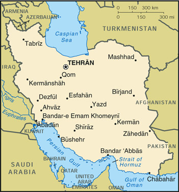

{kind=link}


| Iran |
| |
 | |
| Introduction |
Background: Known as Persia until 1935, Iran became an Islamic republic in 1979 after the ruling shah was forced into exile. Conservative clerical forces subsequently crushed westernizing liberal elements. Militant Iranian students seized the US Embassy in Tehran on 4 November 1979 and held it until 20 January 1981. During 1980-88, Iran fought a bloody, indecisive war with Iraq over disputed territory. The key current issue is how rapidly the country should open up to the modernizing influences of the outside world.
| Geography |
Location: Middle East, bordering the Gulf of Oman, the Persian Gulf, and the Caspian Sea, between Iraq and Pakistan
Geographic coordinates: 32 00 N, 53 00 E
Map references: Middle East
Area:
total:
1.648 million sq km
land:
1.636 million sq km
water:
12,000 sq km
Area - comparative: slightly larger than Alaska
Land boundaries:
total:
5,440 km
border countries:
Afghanistan 936 km, Armenia 35 km, Azerbaijan-proper 432 km, Azerbaijan-Naxcivan exclave 179 km, Iraq 1,458 km, Pakistan 909 km, Turkey 499 km, Turkmenistan 992 km
Coastline:
2,440 km
note:
Iran also borders the Caspian Sea (740 km)
Maritime claims:
contiguous zone:
24 nm
continental shelf:
natural prolongation
exclusive economic zone:
bilateral agreements, or median lines in the Persian Gulf
territorial sea:
12 nm
Climate: mostly arid or semiarid, subtropical along Caspian coast
Terrain: rugged, mountainous rim; high, central basin with deserts, mountains; small, discontinuous plains along both coasts
Elevation extremes:
lowest point:
Caspian Sea -28 m
highest point:
Qolleh-ye Damavand 5,671 m
Natural resources: petroleum, natural gas, coal, chromium, copper, iron ore, lead, manganese, zinc, sulfur
Land use:
arable land:
10%
permanent crops:
1%
permanent pastures:
27%
forests and woodland:
7%
other:
55% (1993 est.)
Irrigated land: 94,000 sq km (1993 est.)
Natural hazards: periodic droughts, floods; dust storms, sandstorms; earthquakes along western border and in the northeast
Environment - current issues: air pollution, especially in urban areas, from vehicle emissions, refinery operations, and industrial effluents; deforestation; overgrazing; desertification; oil pollution in the Persian Gulf; inadequate supplies of potable water
Environment - international agreements:
party to:
Biodiversity, Climate Change, Desertification, Endangered Species, Hazardous Wastes, Marine Dumping, Nuclear Test Ban, Ozone Layer Protection, Wetlands
signed, but not ratified:
Environmental Modification, Law of the Sea, Marine Life Conservation
| People |
Population: 65,619,636 (July 2000 est.)
Age structure:
0-14 years:
34% (male 11,542,446; female 11,035,705)
15-64 years:
61% (male 20,151,083; female 19,879,432)
65 years and over:
5% (male 1,592,753; female 1,418,217) (2000 est.)
Population growth rate: 0.83% (2000 est.)
Birth rate: 18.29 births/1,000 population (2000 est.)
Death rate: 5.45 deaths/1,000 population (2000 est.)
Net migration rate: -4.55 migrant(s)/1,000 population (2000 est.)
Sex ratio:
at birth:
1.05 male(s)/female
under 15 years:
1.05 male(s)/female
15-64 years:
1.01 male(s)/female
65 years and over:
1.12 male(s)/female
total population:
1.03 male(s)/female (2000 est.)
Infant mortality rate: 30.02 deaths/1,000 live births (2000 est.)
Life expectancy at birth:
total population:
69.66 years
male:
68.34 years
female:
71.05 years (2000 est.)
Total fertility rate: 2.2 children born/woman (2000 est.)
Nationality:
noun:
Iranian(s)
adjective:
Iranian
Ethnic groups: Persian 51%, Azeri 24%, Gilaki and Mazandarani 8%, Kurd 7%, Arab 3%, Lur 2%, Baloch 2%, Turkmen 2%, other 1%
Religions: Shi'a Muslim 89%, Sunni Muslim 10%, Zoroastrian, Jewish, Christian, and Baha'i 1%
Languages: Persian and Persian dialects 58%, Turkic and Turkic dialects 26%, Kurdish 9%, Luri 2%, Balochi 1%, Arabic 1%, Turkish 1%, other 2%
Literacy:
definition:
age 15 and over can read and write
total population:
72.1%
male:
78.4%
female:
65.8% (1994 est.)
| Government |
Country name:
conventional long form:
Islamic Republic of Iran
conventional short form:
Iran
local long form:
Jomhuri-ye Eslami-ye Iran
local short form:
Iran
Data code: IR
Government type: theocratic republic
Capital: Tehran
Administrative divisions: 28 provinces (ostanha, singular - ostan); Ardabil, Azarbayjan-e Gharbi, Azarbayjan-e Sharqi, Bushehr, Chahar Mahall va Bakhtiari, Esfahan, Fars, Gilan, Golestan, Hamadan, Hormozgan, Ilam, Kerman, Kermanshahan, Khorasan, Khuzestan, Kohkiluyeh va Buyer Ahmadi, Kordestan, Lorestan, Markazi, Mazandaran, Qom, Qazvin, Semnan, Sistan va Baluchestan, Tehran, Yazd, Zanjan
Independence: 1 April 1979 (Islamic Republic of Iran proclaimed)
National holiday: Islamic Republic Day, 1 April (1979)
Constitution: 2-3 December 1979; revised 1989 to expand powers of the presidency and eliminate the prime ministership
Legal system: the Constitution codifies Islamic principles of government
Suffrage: 15 years of age; universal
Executive branch:
chief of state:
Leader of the Islamic Revolution Ayatollah Ali Hoseini-KHAMENEI (since 4 June 1989)
head of government:
President (Ali) Mohammad KHATAMI-Ardakani (since 3 August 1997); First Vice President Hasan Ebrahim HABIBI (since NA August 1989)
cabinet:
Council of Ministers selected by the president with legislative approval
elections:
leader of the Islamic Revolution appointed for life by the Assembly of Experts; president elected by popular vote for a four-year term; election last held 23 May 1997 (next to be held NA May 2001)
election results:
(Ali) Mohammad KHATAMI-Ardakani elected president; percent of vote - (Ali) Mohammad KHATAMI-Ardakani 69%
Legislative branch:
unicameral Islamic Consultative Assembly or Majles-e-Shura-ye-Eslami (290 seats, note - changed from 270 seats with the 18 February 2000 election; members elected by popular vote to serve four-year terms)
elections:
last held 18 February-NA April 2000 (next to be held NA 2004)
election results:
percent of vote - NA; seats - NA; note - reformers received 70% of the vote (170 seats), the conservatives received 30% (45 seats), and independents (10 seats); 65 seats were up for runoff election in April 2000
Judicial branch: Supreme Court
Political parties and leaders: since President KHATAMI's election in May 1997, several political parties have been licensed; Executives of Construction; Followers of the Imam's Line and the Leader (conservative); Islamic Coalition Association [Habibollah ASQAR-OLADI]; Islamic Iran Solidarity Party; Islamic Partnership Front; Militant Clerics Association [Ayatollah Mahdavi KANI]; Second Khordad Front (pro-reform); Tehran Militant Clergy Association [Secretary General Ayatollah Mohammad EMAMI-KASHANI]
Political pressure groups and leaders: active student groups include the pro-reform "Organization for Strengthening Unity" and "the Union of Islamic Student Societies'; groups that generally support the Islamic Republic include Ansar-e Hizballah, Mojahedin of the Islamic Revolution, Muslim Students Following the Line of the Imam, and the Islamic Coalition Association; opposition groups include the Liberation Movement of Iran and the Nation of Iran party; armed political groups that have been almost completely repressed by the government include Mojahedin-e Khalq Organization (MEK), People's Fedayeen, Democratic Party of Iranian Kurdistan; the Society for the Defense of Freedom
International organization participation: CCC, CP, ECO, ESCAP, FAO, G-19, G-24, G-77, IAEA, IBRD, ICAO, ICC, ICRM, IDA, IDB, IFAD, IFC, IFRCS, IHO, ILO, IMF, IMO, Inmarsat, Intelsat, Interpol, IOC, IOM (observer), ISO, ITU, NAM, OIC, OPCW, OPEC, PCA, UN, UNCTAD, UNESCO, UNHCR, UNIDO, UPU, WCL, WFTU, WHO, WMO, WToO
Diplomatic representation in the US: none; note - Iran has an Interests Section in the Pakistani Embassy, headed by Faramarz FATH-NEJAD; address: Iranian Interests Section, Pakistani Embassy, 2209 Wisconsin Avenue NW, Washington, DC 20007; telephone: [1] (202) 965-4990
Diplomatic representation from the US: none; note - protecting power in Iran is Switzerland
Flag description: three equal horizontal bands of green (top), white, and red; the national emblem (a stylized representation of the word Allah) in red is centered in the white band; ALLAH AKBAR (God is Great) in white Arabic script is repeated 11 times along the bottom edge of the green band and 11 times along the top edge of the red band
| Economy |
Economy - overview: Iran's economy is a mixture of central planning, state ownership of oil and other large enterprises, village agriculture, and small-scale private trading and service ventures. President KHATAMI has continued to follow the market reform plans of former President RAFSANJANI and has indicated that he will pursue diversification of Iran's oil-reliant economy although he has made little progress toward that goal. The strong oil market in 1996 helped ease financial pressures on Iran and allowed for Tehran's timely debt service payments. Iran's financial situation tightened in 1997 and deteriorated further in 1998 because of lower oil prices. The subsequent zoom in oil prices in 1999 afforded Iran fiscal breathing room but does not solve Iran's structural economic problems.
GDP: purchasing power parity - $347.6 billion (1999 est.)
GDP - real growth rate: 1% (1999 est.)
GDP - per capita: purchasing power parity - $5,300 (1999 est.)
GDP - composition by sector:
agriculture:
21%
industry:
34%
services:
45% (1997 est.)
Population below poverty line: 53% (1996 est.)
Household income or consumption by percentage share:
lowest 10%:
NA%
highest 10%:
NA%
Inflation rate (consumer prices): 30% (1999 est.)
Labor force:
15.4 million
note:
shortage of skilled labor
Labor force - by occupation: agriculture 33%, industry 25%, services 42% (1997 est.)
Unemployment rate: 25% (1999 est.)
Budget:
revenues:
$34.6 billion
expenditures:
$34.9 billion, including capital expenditures of $11.8 billion (FY96/97)
Industries: petroleum, petrochemicals, textiles, cement and other construction materials, food processing (particularly sugar refining and vegetable oil production), metal fabricating, armaments
Industrial production growth rate: 5.7% (FY95/96 est.)
Electricity - production: 95.31 billion kWh (1998)
Electricity - production by source:
fossil fuel:
92.33%
hydro:
7.67%
nuclear:
0%
other:
0% (1998)
Electricity - consumption: 88.638 billion kWh (1998)
Electricity - exports: 0 kWh (1998)
Electricity - imports: 0 kWh (1998)
Agriculture - products: wheat, rice, other grains, sugar beets, fruits, nuts, cotton; dairy products, wool; caviar
Exports: $12.2 billion (f.o.b., 1998 est.)
Exports - commodities: petroleum 80%, carpets, fruits, nuts, hides, iron, steel
Exports - partners: Japan, Italy, Greece, France, Spain, South Korea
Imports: $13.8 billion (f.o.b., 1998 est.)
Imports - commodities: machinery, military supplies, metal works, foodstuffs, pharmaceuticals, technical services, refined oil products
Imports - partners: Germany, Italy, Japan, UAE, UK, Belgium
Debt - external: $21.9 billion (1996 est.)
Economic aid - recipient: $116.5 million (1995)
Currency: 10 Iranian rials (IR) = 1 toman; note - domestic figures are generally referred to in terms of the toman
Exchange rates: Iranian rials (IR) per US$1 - 1,754.90 (January 2000), 1,725.93 (1999), 1,751.86 (1998), 1,752.92 (1997), 1,750.76 (1996), 1,747.93 (1995); black market rate: 7,000 rials per US$1 (December 1998); note - as of May 1995, the "official rate" of 1,750 rials per US$1 is used for imports of essential goods and services and for oil exports, whereas the "official export rate" of 3,000 rials per US$1 is used for non-oil exports and imports not covered by the official rate
Fiscal year: 21 March - 20 March
| Communications |
Telephones - main lines in use: 7 million (1998 est.)
Telephones - mobile cellular: 265,000 (August 1998)
Telephone system:
inadequate but currently being modernized and expanded with the goal of not only improving the efficiency and increasing the volume of the urban service but also bringing telephone service to several thousand villages, not presently connected
domestic:
as a result of heavy investing in the telephone system since 1994, the number of long distance channels in the microwave radio relay trunk has grown substantially; many villages have been brought into the net; the number of main lines in the urban systems have approximately doubled; and thousands of mobile cellular subscribers are being served; moreover, the technical level of the system has been raised by the installation of thousands of digital switches
international:
HF radio and microwave radio relay to Turkey, Azerbaijan, Pakistan, Afghanistan, Turkmenistan, Syria, Kuwait, Tajikistan, and Uzbekistan; submarine fiber-optic cable to UAE with access to Fiber-Optic Link Around the Globe (FLAG); Trans Asia Europe (TAE) fiber-optic line runs from Azerbaijan through the northern portion of Iran to Turkmenistan with expansion to Georgia and Azerbaijan; satellite earth stations - 9 Intelsat and 4 Inmarsat; Internet service available but limited to electronic mail to promote Iranian culture
Radio broadcast stations: AM 72, FM 5, shortwave 5 (1998)
Radios: 17 million (1997)
Television broadcast stations: 28 (plus 450 low-power repeaters) (1997)
Televisions: 4.61 million (1997)
Internet Service Providers (ISPs): 1 (1999)
| Transportation |
Railways:
5,600 km
broad gauge:
94 km 1.676-m gauge
standard gauge:
5,506 km 1.435-m gauge (146 km electrified) (1998)
Highways:
total:
140,200 km
paved:
49,440 km (including 470 km of expressways)
unpaved:
90,760 km (1998 est.)
Waterways: 904 km; the Shatt al Arab is usually navigable by maritime traffic for about 130 km; channel has been dredged to 3 m and is in use
Pipelines: crude oil 5,900 km; petroleum products 3,900 km; natural gas 4,550 km
Ports and harbors: Abadan (largely destroyed in fighting during 1980-88 war), Ahvaz, Bandar 'Abbas, Bandar-e Anzali, Bushehr, Bandar-e Emam Khomeyni, Bandar-e Lengeh, Bandar-e Mahshahr, Bandar-e Torkaman, Chabahar (Bandar Beheshti), Jazireh-ye Khark, Jazireh-ye Lavan, Jazireh-ye Sirri, Khorramshahr (limited operation since November 1992), Now Shahr
Merchant marine:
total:
138 ships (1,000 GRT or over) totaling 3,517,751 GRT/6,208,230 DWT
ships by type:
bulk 45, cargo 36, chemical tanker 4, combination bulk 1, container 7, liquified gas 1, multi-functional large load carrier 6, petroleum tanker 26, refrigerated cargo 2, roll-on/roll-off 9, short-sea passenger 1 (1999 est.)
Airports: 288 (1999 est.)
Airports - with paved runways:
total:
112
over 3,047 m:
38
2,438 to 3,047 m:
21
1,524 to 2,437 m:
23
914 to 1,523 m:
24
under 914 m:
6 (1999 est.)
Airports - with unpaved runways:
total:
176
over 3,047 m:
2
2,438 to 3,047 m:
5
1,524 to 2,437 m:
14
914 to 1,523 m:
123
under 914 m:
32 (1999 est.)
Heliports: 11 (1999 est.)
| Military |
Military branches: Islamic Republic of Iran regular forces (includes Ground Forces, Navy, Air and Air Defense Forces), Revolutionary Guards (includes Ground, Air, Navy, Qods, and Basij-mobilization-forces), Law Enforcement Forces
Military manpower - military age: 21 years of age
Military manpower - availability:
males age 15-49:
17,762,030 (2000 est.)
Military manpower - fit for military service:
males age 15-49:
10,545,869 (2000 est.)
Military manpower - reaching military age annually:
males:
801,260 (2000 est.)
Military expenditures - dollar figure: $5.787 billion (FY98/99)
Military expenditures - percent of GDP: 2.9% (FY98/99)
| Transnational Issues |
Disputes - international: Iran and Iraq restored diplomatic relations in 1990 but are still trying to work out written agreements settling outstanding disputes from their eight-year war concerning border demarcation, prisoners-of-war, and freedom of navigation and sovereignty over the Shatt al Arab waterway; Iran occupies two islands in the Persian Gulf claimed by the UAE: Lesser Tunb (called Tunb as Sughra in Arabic by UAE and Jazireh-ye Tonb-e Kuchek in Persian by Iran) and Greater Tunb (called Tunb al Kubra in Arabic by UAE and Jazireh-ye Tonb-e Bozorg in Persian by Iran); Iran jointly administers with the UAE an island in the Persian Gulf claimed by the UAE (called Abu Musa in Arabic by UAE and Jazireh-ye Abu Musa in Persian by Iran) - over which Iran has taken steps to exert unilateral control since 1992, including access restrictions and a military build-up on the island; the UAE has garnered significant diplomatic support in the region in protesting these Iranian actions; Caspian Sea boundaries are not yet determined among Azerbaijan, Iran, Kazakhstan, Russia, and Turkmenistan
Illicit drugs: despite substantial interdiction efforts, Iran remains a key transshipment point for Southwest Asian heroin to Europe; domestic consumption of narcotics remains a persistent problem and Iranian press reports estimate that there are at least 1.2 million drug users in the country